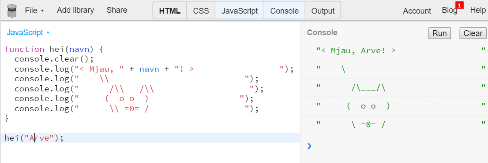
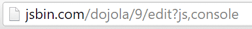
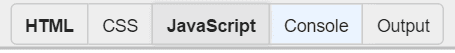
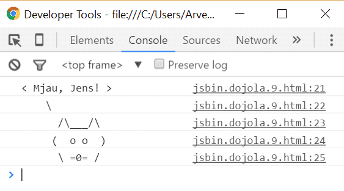

I denne oppgaven blir du introdusert for programmeringsspråket JavaScript. Du
skal gjøre den klassiske oppgaven Hei verden, med en katt.

Steg 1: Bruke JS Bin
Du skal bruke en nettside som heter JS Bin for denne oppgaven. JS Bin er en
nettside som lar deg programmere JavaScript. Vi kunne også brukt nettleseren
din direkte, men i JS Bin blir stegene lik for alle, uansett om du bruker
Internet Explorer, Mozilla Firefox, Chrome, Opera, Safari eller en annen
nettleser. I tillegg er det med JS Bin mulig å gjøre denne oppgaven på
nettbrett.
Tips
Her er flere måter å kjøre JavaScript-kode på:
Lagre en .js-fil i din favoritt teksteditor og åpne den i en nettleser
Skrive kode mellom <script> </script> i <body> eller <head> i en HTML-fil, og åpne den i en nettleser
I <head>, skrive <script src="fil_navn.js"></script>
Sjekkliste
console.log("hei verden");
Forklaring
Her er en forklaring til koden over:
console.log() betyr at vi ønsker å kjøre kommandoen med navnet console.log. Den skriver ut det som er mellom parantesene til log() i konsollen.
.log er en av flere utskriftsmetoder. Prøv console.error, ser du hva
forskjellen til console.log er?
Tekst som skrives ut til konsollen ligger mellom ", slik som "hei verden".
; betyr at kodesetningen er ferdig.
Steg 2: Lage en funksjon
En funksjon er nesten som en oppskrift. Funksjoner brukes når man ønsker å
gjenbruke kode flere ganger eller bryte opp et problem til mindre biter. En
funksjon kan både ta i mot og gi fra seg (returnere) data. Din funksjon skal hete hei,
ta i mot et navn og skrive navnet til konsollen.
Sjekkliste
functionhei(navn) {
console.log(navn);
}
Forklaring
function hei betyr at funksjonen skal hete hei.
(navn) betyr at vi kan sende inn data til funksjonen. navn blir her en variabel, den holder på en verdi som kan endres. Vi skal se nærmere på dette senere.
Du kan slette historien i Console ved å trykke på knappen , eller legge inn console.clear();
i koden din.
Steg 3: Hei navn!
I steg 2 gjorde vi ikke noe annet enn det som console.log gjør. Nå skal du få
hei("Emma") til å skrive ut "Hei Emma!".
Sjekkliste
functionhei(navn) {
console.log("Hei " + navn + "!");
}
Forklaring
I funksjonen hei vil navn være en variabel. Den holder på en verdi og denne verdien kan endres. Først er navn det samme som Emma, så blir navn til Jens. Variabler er svært nyttig innfor programmering og vi kommer til å bruke masse variabler fremover.
Steg 4: Katten sier hei
I dette siste steget skal du lage en katt som sier hei.
Sjekkliste
functionhei(navn) {
console.log("< Mjau, " + navn + "! > ");
console.log(" \\ ");
console.log(" /\\___/\\ ");
console.log(" ( o o ) ");
console.log(" \\ =0= / ");
}
Bakoverstrek
\ brukes til spesielle bokstaver. \n for eksempel betyr ny linje. Derfor
må du skrive \\ dersom du ønsker en vanlig bakoverstrek.
Steg 5: Dele prosjektet
Kanskje hadde det vært kult å sende en kattehilsen til noen av dine beste
venner? La oss lage en personlig hilsen til hver av de.
Sjekkliste
hei("Navnet til din venn");
Versjon 9: 
Hver gang du endrer programmet og trykker Ctrl + s
får programmet en ny versjon. Slik kan du lagre flere varianter av samme
program, med forskjellige navn.

En annen måte å dele programmet
Husker du oppgaven HTML: Publiser nettsiden din? Kanskje du kan laste opp JavaScript-koden til din Github-side? Et lite tips er å legge JavaScript-koden inn i <head>-taggen ved å bruke disse taggene:
<script></script>
Du kan også lagre JavaScript-koden i en egen .js-fil, for eksempel katt.js. Så kan du referere til den fra en HTML-fil på denne måten:
<head><scriptsrc="katt.js"></script></head>
Husk at katt.js må da ligge i samme mappe som HTML-filen. Dette skal vi prøve ut senere.
Men for at dette skal funkere må vi skrive om console.log() til:
document.writeln();
Denne kommandoen skriver rett på HTML-siden og ikke i konsollen. På denne måten vil vennene dine kunne se koden uten å åpne konsollen. Problemet med document.writeln()er at vi ikke får hver utskrift på en egen linje, derfor må vi også legge til denne CSS-en:
`document.body.style.whiteSpace = "pre"; //gjør at du kan ha flere mellomrom etterhverandre
document.writeln() legger også til et linjeskift etter den har skrevet ut teksten, dersom du ikke ønsker det kan du bruke document.write().
Det er også mulig å laste ned prosjektet og lagre det på datamaskinen. La oss gjøre det.
Sjekkliste

Hvis du ikke ser katten, gjør neste steg.
Gratulerer! Du har nå skrevet ditt første JavaScript-program!
Forbedre denne siden
Funnet en feil? Kunne noe vært bedre? Hvis ja, vennligst gi oss tilbakemelding ved å lage en sak på Github eller fiks feilen selv om du kan. Vi er takknemlige for enhver tilbakemelding!